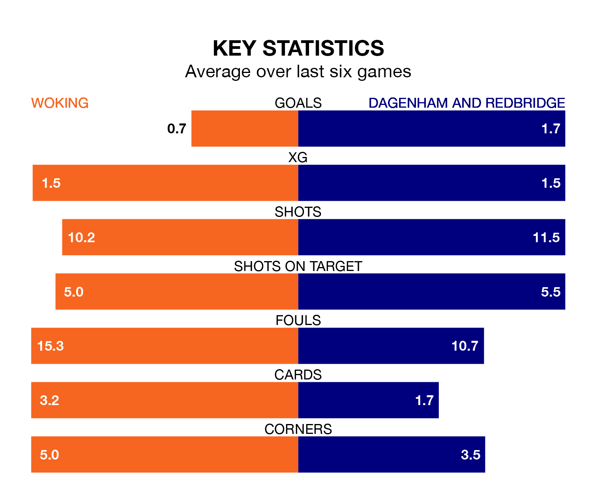

Dagenham and Redbridge travel to Woking on Saturday in the National League.
The visitors come into the game on the back of a draw in their last match, having tied with Ebbsfleet United 1-1 at home, with a goal from Joshua David Rees.
The Cardinals also drew their last match, 1-1 against Bromley, with their goal scored by Ricky Korboa.
In the last 10 years, Woking and Dagenham & Redbridge have played each other on 12 occasions. Woking won six of them, Dagenham & Redbridge three, and they drew three times.
On average, the Cardinals scored 1.3 goals and Dagenham & Redbridge 1.0 in those matches.
Their last meeting was on October 21, when Dagenham & Redbridge won 2-1 at home.
With 43 goals in 43 games so far this season, Woking are the league's second-lowest scorers with 1.0 goals per game. But they are conceding fewer than average too, letting in 51 goals at a rate of 1.2 per game.
Dagenham & Redbridge, meanwhile, are average scorers, with 1.5 goals per game. They have conceded 1.3 goals per game.
The Cardinals are 18th in the table after 43 games, of which they have won 13 and drawn 10, earning 49 points.
The away side are six places ahead of the hosts in 12th, with 14 wins and 12 draws putting them on 54 points.
Woking are in mixed form in the National League, with two wins and two draws from their last six games.
With two wins and three draws over that period, Dagenham & Redbridge's form is slightly better – they have taken nine points from 18, compared to Woking's eight.
Updated: 16:41 (UTC), 04/04/24